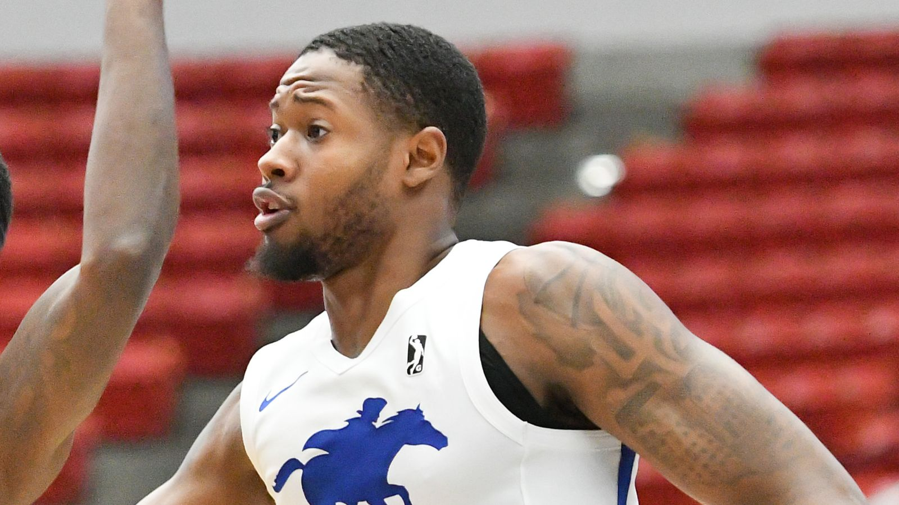

古巣へ、1年契約で復帰 —— ヘイウッド・ハイスミス、サンズと合意
FAのフォワード、ヘイウッド・ハイスミスが、フェニックス・サンズと1年契約に合意した。Shams Charania（ESPN）が日本時間8月17日、自身のXで一報を伝えた。

エージェントを通じて伝わった契約合意
「Free agent F Haywood Highsmith has agreed to a one-year deal to return to the Phoenix Suns, his agent Jerry Dianis tells ESPN.」——Shamsによれば、契約合意はハイスミスのエージェント、ジェリー・ディアニス氏を通じてESPNに伝えられた。契約金額など詳細な条件は、この時点では公表されていない。
「復帰」という言葉が示すもの
「return to the Phoenix Suns」という表現から、ハイスミスは以前にもサンズでプレーした経験があるとみられる。今回のFA契約により、あらためて同チームでのプレーを選んだ形だ。
出典: Shams Charania（ESPN）のXポスト（2026年8月17日・日本時間）
https://x.com/ShamsCharania/status/2089365249832972755